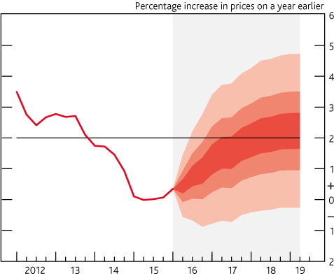

Asking the right question
This section looks at the steps to ensure that analysts and policy makers understand the question being asked, how output ranges will be used, and how we can appropriately incorporate uncertainty into the analysis.
Agreeing what the question is
Before any analysis begins we should work hard to define the precise "exam question".
Understanding the problem
Clarify what the real question is
It is important to ensure that the question is correctly framed to address the problem. For example, are we really interested in 'how much money will my policy save?', or should we be asking 'what is the likelihood that this policy would save more than £x?'.
As well as clearly identifying the overarching question to answer, we should also ensure that any sub-questions to support the analysis are appropriately thought through. For example - in an education context we may be interested in uncertainty on both an academic and a financial year basis.
Appropriate use of outputs
Once the question and sub-questions have been agreed, analysts and decision makers should discuss how the outputs are intended to be used. Understanding the role of the analysis in the broader decision-making context is important as it will help to inform which uncertainty techniques are appropriate and proportionate.
How will output ranges be used?
Discuss how the outputs will be used
Will the ultimate decision be made solely on the basis of the uncertainty analysis, or is it a part of the bigger picture informing the decision? The more influential the uncertainty analysis is, and the more that hinges on the decision, the more important it is to build in robust uncertainty analysis.
If the output is to be fed into ‘downstream’ models, then it is important to understand the requirements of the downstream model. For example, if scenarios are used to illustrate uncertainty, then these may not be suitable for a ‘downstream’ Monte Carlo simulation.
Are there dependent models drawing on the analysis?
Incorporating uncertainty into analysis
Now that we know what the question is and the context in which the outputs will be used, we should agree how to build appropriate uncertainty into the analysis. It is a good idea to take the decision maker to the end of the process right at the start. What is it conceptually that they would like to be able to say? This is important as it frames the way in which the analysis will work.
Sources of uncertainty
Uncertainty can feed through into analysis from many different sources. Each step in data collection, data processing and modelling is likely to bring added uncertainty.
Try to identify and record all the potential sources of uncertainty in your analysis at an early stage. Early identification of uncertainty is important, if you overlook a potential source of uncertainty this could reduce the usefulness and impact of your subsequent analysis.
Classifications of uncertainty
It is useful to distinguish between distinct classifications of uncertainty. Firstly, understanding the characteristics of different classifications of uncertainty by type can help you to identify sources of uncertainty in your own analysis. Further, categorising the types of uncertainty in an analytical problem provides a framework for the next steps of analysis. Once uncertainty has been identified, you should then ask: can you quantify the uncertainty, and can you reduce it?
A common classification divides uncertainty into aleatory, epistemic and ontological types. We explain these in the table below.
Table 2.1: Classifications of Uncertainty
| Definition |
Known knowns are things we know that we know. Aleatory uncertainty refers to the inherent uncertainty that is always present due to underlying probabilistic variability. Since we are aware of aleatory uncertainty and can estimate average values and variation, we usually regard it as a ‘known known’ |
Known unknowns are things that we know we don’t know. Epistemic uncertainty comes from a lack of knowledge about the (complex) system we are trying to model. Assumptions are used to plug these gaps in the absence of information. |
Unknown unknowns are things that we don't know we don't know. Ontological uncertainty usually comes from factors or situations that we have not previously experienced and therefore cannot consider because we simply don't know where to look in the first instance. |
| Can it be quantified? |
We can quantify aleatory uncertainty. We usually characterise this type of uncertainty using a probability distribution function (PDF). A PDF gives all the possible values that a variable can have and assigns a probability of occurrence to each. As analysts, the challenge for us is to derive the PDF. |
Epistemic uncertainty can be quantified (but isn’t always) – e.g. through sensitivity analysis. These techniques quantify the uncertainty by altering assumptions and observing the impact on modelling outputs. They will work if the range of assumptions tested covers the range of unknown variables. |
Ontological uncertainty cannot be quantified. We cannot identify unknowable unknowns, so there are no actions we can take to quantify them. What we can do is be clear about the sources of uncertainty we have included, so that any others subsequently identified would likely add to that uncertainty. |
| Can it be reduced? |
This type of uncertainty cannot be completely removed. We can sometimes reduce it through data smoothing or increasing the size of a sample, but there will always be some random variability. |
Epistemic uncertainty is reducible. Epistemic uncertainty can be reduced by gathering information to lessen the gaps in our knowledge. Using new data sources, expanding our data collection or conducting research can remove the need for assumptions or refine their ranges. |
This type of uncertainty is not reducible. However, ontological uncertainty can usually be separated into "unknowable unknowns" and "knowable unknowns". Horizon scanning can help identify knowable unknowns. Once they are identified they become epistemic uncertainties. |
| Example |
Tossing a coin is an example of aleatory uncertainty. We can observe the possible outcomes (heads or tails) and the probability of each occurring (50:50), therefore create a PDF. However, prior to the coin being tossed we cannot reduce the uncertainty in outcomes. |
Taking our coin toss example, we don't know whether the coin is fair in the first instance. We may assume the coins is fair and will give a 50% probability of each outcome. Once we start to toss the coin, we start to gather information on its fairness. The longer we toss the coin the better our information gets and the greater the reduction in epistemic uncertainty. |
Unknown unknown are often future events or circumstances that we cannot predict. An example could be the introduction of a new technology that was previously unheard of. If the new technology affects the operation of a system, previous analysis is no longer reliable as it didn't account for this change. |
Sources of uncertainty
In this section, we set out some considerations to help you think about sources of uncertainty, and how you might quantify the size and impact of uncertainty at distinct stages of the analysis process.
To gain a full picture of the impact of uncertainty on your analysis it is important to think through what you know about the size and distribution of uncertainties, and how you might include this information in your analysis. The list is not exhaustive. Rather, it is intended as an aid to critical thinking about practical steps you can take to quantify uncertainty.
Usually, it is not possible to quantify exactly the level of uncertainty in your analysis. Where measurement is difficult or incomplete, think about what you can say about the reliability of your measures and what might be missing.
Specifying and collecting data
Think about what you are measuring and how it is defined
The data that feeds into your analysis project will have been previously specified, defined and collected. In some cases, you will do this yourself, but more commonly you will draw on data sources collected by others.
How well do the definitions and concepts in the data you want to use fit with what you are trying to measure? Differences between groups can mean that data captured for one purpose is inappropriate for another. For example, you might estimate the number of unemployed people using a benefit claimant count from an administrative data source. These measures capture different concepts. In this situation, think about how the measures differ, how the concepts they capture differ and how you can adjust for this. The data should match the subjects you are interested in.
How well does what you can actually measure compare with your analysis objective?
Once you have identified a source of data which best matches the concepts you want to analyse, you need to investigate how that data was gathered and how this meets your needs.
Where do the data come from and how were they collected?
You should assess how rigorous the collection process is, and whether quality assurance is sufficiently robust to meet your needs.
Are there issues with how the collection was set up? For example, poorly designed survey questions or coding tools to capture responses may lead to ambiguity, inconsistency and bias in responses. Some concepts are hard to measure, and it can be difficult for data subjects to give useful answers.
Some datasets are subject to regulation and compliance with standards or other codes of practice. In such cases, quality should be well documented and assured. For example, National Statistics must go through strict quality control and these processes must be fully documented.
You will often find that there is more than one source of data available for your analysis. You will need to decide which sources meet your needs most effectively. Do the sources give similar outcomes? If not, why might that be? Can you use one source to validate another?
Is there more than one data source?
Ideally, the data should cover the period that you are interested in exactly. However, often the data you can obtain is captured before or after the target period or covers it only partially.
What time period does the data cover?
Consider how much impact this might have. If the measure is broadly stable and changes slowly, this is more likely to be useful than a very volatile source which changes rapidly if only available outside the time of interest. Consider using smoothing or estimation methods to reduce volatility.
In the absence of direct measure of variance, be aware that small sample sizes will increase the margin of error in your results.
Are there known biases or uncertainties in the data that you can quantify and potentially correct? For example, is there information about systematic missingness or under-reporting that you have data on or can correct through external validation or weighting?
Data Processing
Data processing may introduce new uncertainty or errors
Data processing is the collation and manipulation of data to produce meaningful information. You must preserve the integrity of data when you process it, but you should also think about whether pre-processing by others might have an impact. Errors can arise because of inconsistent approaches to coding and editing, or arbitrary decisions by data entry teams about how to treat missing values.
Coding is a process in which data is categorised to facilitate analysis. It can cause problems when the coding classification does not match the concept you are measuring, or coding is inconsistent across different data sets. For example, data may use a coding for age range that cover 15-25 or 25-35-year olds. If you are looking to assess the impact on 20-30-year olds, neither code matches your concept. This would introduce uncertainty into your analysis
Are there coding differences?
Adjustments to the weights of survey responses are used to make survey results representative of a wider population. Make sure you understand how such adjustments have been applied and ensure that calibration does not conflict with your application.
How have surveys been calibrated?
An outlier is a data point that is distant from other observations. Outliers can arise because of coding or measurement errors, but also because of genuinely unusual outcomes. How certain are you are that outlying data points are valid? Have outliers already been treated or removed before you got the data? The choice of how to deal with an outlier will differ in each piece of analysis, but you should always consider how the retention or exclusion of an outlier will affect your results. Truncation or removal of outliers will typically introduce bias but this may be tolerated in exchange for reduced variance.
How have extreme values been processed?
Imputation is the process of replacing missing data with substituted values, either based on a relationship with other variables or copied from a similar record. However imputed values can introduce systematic errors (bias) to a data set. How robust are the assumptions? Is there any evidence of a systematic impact? If the changes introduced by imputation are random there is much less cause for concern, as this usually leads to a moderate increase in variance but be aware that this is rarely reflected in measures of variance.
Has data been imputed?
Combining datasets can increase their value and identify new relationships between variables, but data linkage can result in two types of errors: false positive matches and false negative matches.
How have datasets been matched and linked?
A false positive match is where two records are linked together, when they are not the same. A false negative match is where two records are not linked together, when they do in fact belong to the same entity (person, business, etc). You should consider the possibility of these errors and the cause for their occurrence. What do you know about false positives and negatives, match rates, and missingness? Is there a risk that unwanted structure (for example a falsely increased correlation) has been introduced by matching and linking?
What do you know about the linking process and its outcomes?
Disclosure control is a set of methods to ensure that no person or organisation is identifiable from the results of analysis. This protects the confidentiality of subjects of research. In almost all cases this will mean a loss of accuracy which may reduce the usefulness of the data.
How has disclosure control been applied?
How was disclosure control done and what are the impacts? Well-designed anonymisation should usually result in loss of detail with no systematic impact - but poorly designed disclosure control can introduce structural effects. In some cases, the exclusion of data can lead to systematic errors (biases) in results. Where data has been suppressed, it should be clearly caveated so that you can make decisions about the suitability of the data source.
Specification of the model
Consider the modelling methodology you have chosen
Model specification is the process of selecting an appropriate functional form for the model and choosing which variables to include. The specification will cover both theoretical and applied properties of the model.
There are often several methods for modelling the same problem. Approaches will have different benefits and limitations, and there may be uncertainty as to which approach will produce the most accurate results. Is there consensus on how you should approach the problem? Consider using experts to steer and agree a consensus if the approach is new or untested. If there is no consensus (for example experts disagree about the best approach) are there multiple valid approaches and are they consistent in their findings?
Are there multiple approaches?
In most cases there will be a theory that serves as the foundation of a model. This can be anything from a detailed economic theory to a simple relationship between two variables.
What is the theoretical underpinning?
Is the theoretical underpin sensible, given the research problem? What does the approach tell you about uncertainty? Some models are underpinned by statistical theory that allows you to estimate uncertainty given certain assumptions. Can you quantify the uncertainty in the parameters and goodness of fit?
When constructing a mathematical function to best fit a data set, it is possible that multiple specifications of the function can provide a good fit. This can result in uncertainty over the best approach to use, so you should consider how different fitting approaches change analytical results.
What function is used to fit the model, and how stable are the results?
You should also explore how stable the model fit is from a single model. Do you get the same or similar outcomes on different runs? Consider undertaking a sensitivity analysis or simulation study to quantify likely variation across multiple runs.
As described earlier, the model won't contain everything. What doesn't the model capture? This might include policy changes, missing indicators, unknown unknowns, shocks, or assumptions about steady states (the world stays broadly the same).
What does the model not cover?
Assumptions
Consider where you have used assumptions
Assumptions are used when we have incomplete knowledge. All models will require some assumptions, so you need to ensure that assumptions are robust and consistently understood. There should be an assumptions log. Where did the assumptions come from? How were they generated and why? What is the impact if they are wrong, and how often are they reviewed?
There are often parameters outside of the scope of the model that have been implicitly assumed. For example, models may assume no substantial policy changes in related areas. These assumptions provide the context in which the modelling results are appropriate. You need to be aware of the limitations that these assumptions impose on analytical results.
What assumptions are outside the scope of the model?
Assumptions should be based on robust evidence. The less evidence to support an assumption the more uncertain it will be. High quality assumptions will be underpinned by robust data, low quality assumptions may simply be an opinion or may be supported by a poor data source.
Assess the quality of each assumption
The importance of an assumption is measured by its effect on the on the analytical output. The higher the impact of an assumption the more uncertain results will be. Critical assumptions will drastically affect the results, while less importance assumptions may only have a marginal effect on results. More weight should be given to gathering evidence to improve the quality of critical assumptions.
Assess the impact of each assumption
Some uncertainties can't be captured in an assumption as we don't have perfect insight. However, effort should be made to identify all possible uncertainties, turning unknown unknowns into known unknown, and capture these as assumptions. The assumptions log will convey the boundary of what has been included.
What don't you know? (unknown unknowns)
Applying model results
Consider what question you are answering
A model is developed to answer a specific set of questions. When interpreting the results, we need to ensure that the model is applicable to the question being asked.
A model will be limited by the assumptions it makes (see scope of model section above). These assumptions must hold for the model outputs to be robust. When applying modelling results you should first consider whether any of the assumptions are violated by deploying the model to address the problem you have.
What are the limits of the model?
When a model is expanded beyond its original scope, this does not necessarily mean that outputs become irrelevant. Consider how the assumptions limit the model in the new context and assess whether these can be changed to make the outputs fit for purpose. If it is possible to change the assumptions, you will need to revisit how these feeds through into quality and impact assessments. You might also find that you need to make additional assumptions and assess their impact.
Can you expand the use of the model?
Many models will be frequently re-run, such as annual or quarterly forecasts. Some data and assumptions may be retained across a period, while others may need to be changed each time the model is used. You will need to consider whether there are limitations in the model that require re-calibration each time the model is used.
When does the model need to be re-calibrated?
General Approaches for Quantifying Uncertainty in a single parameter
In the previous section we highlight ways to think about the size and distribution of uncertainty coming from specific sources. This section brings together those methods and generalises them into approaches that can be applied to any source of uncertainty. In most cases, the approach to uncertainty quantification will be limited by the data and time available to you.
A probability distribution describes the probability of occurrences of different outcomes. Generally there are two types of probability distribution, discrete distributions where the set of possible outcomes is distinct, and continuous distributions where the possible outcomes can take any number.
Can you create a probability distribution?
Consider whether you have information on the underlying distribution of the parameter. Often data from other sources will be provided with confidence intervals (or standard errors, etc) that can be used to quantify uncertainty. Where such information is not provided, you may be able to approximate these with knowledge of the sample size and design.
Distributions can also be created using the errors terms from previous models. Consider the performance of previous forecasts against outturn results. The distribution of previous errors can provide the uncertainty distribution for the current forecast.
If no quantitative data on the underlying population is available, you may be able to elicit this information from experts. Such approaches as the Delphi Method ask a panel of experts to estimate the range of uncertainty and use the aggregated responses to produce a distribution.
A range is similar to a probability distribution, it considers the possible outcomes but does not consider the probability of each outcome occurring. If there are data or resource limitations a range can be a simple way to illustrate the uncertainty in a parameter.
Can you create a range?
Historical data can be used to quantify a range. Consider how the parameter has changed over a suitable time period, the maximum and minimum values could provide a sensible range. When using historical data be aware that you will only be able to assess 'business as usual' uncertainty, if there are future shocks to the system this may fall outside your historic range.
For parameters that have been the subject of academic studies a literature review can be used to create a range. Consider why different studies may result in different outcomes, and which studies are the most suitable for your concept.
If no quantitative data is available, consider whether there are relevant policy constraints that will limit your range. Judgement from experts can be also be used to create sensible ranges.
In some situations it will not be possible to create a probability distribution or a range. In these cases a qualitative assessment of uncertainty should be made. This is still useful to analysts and customers to consider the magnitude of uncertainty.
If not, make a qualitative assessment
This can be done by the analysts or using expert judgement. A simple approach to qualitatively assessing uncertainty is to RAG rate the likelihood and impact of uncertainty in your parameters. This qualitatively assessment should be considered when thinking about the analytical results. If data is categorised as highly uncertain and having a large impact on results, then final outputs will be subject to large uncertainty.
Conducting uncertainty analysis
The previous sections covered making sure that we are asking the right question, identifying sources of uncertainty and quantifying the scale of the uncertainty. This chapter gives a range of common techniques for analysing uncertainty
Preparing to conduct the analysis
This section covers plausible scenarios to consider, testing, and interpreting outputs.
Plausible scenarios
Make sure that your outputs cover the full range of plausible outcomes
Ultimately our aim should be to communicate the overall uncertainty in our outputs, as this is what really matters to the end users. To do this we need to think about plausible ways that uncertainties might combine.
It's tempting to simply take the 'worst case' for each uncertainty, plug those into your model, and use the answer as the overall 'worst case'. But this would be too pessimistic and could lead customers to dismiss the results as unlikely. If each one of those uncertainties is at the limit of plausibility, it would be highly unlikely for them all to occur simultaneously by chance.
Our outputs should cover the full range of plausible outcomes, which have been signed off by stakeholders. So, if we're looking at 'worst case' combinations, then we should also look at 'best case' combinations.
We need to consider correlations between variables and an appropriate technique. If one event happens, is another event more or less likely to happen? Are they purely independent? Some techniques are easier than others to take correlations into account (e.g. Monte Carlo analysis - see table 3.1). However, if correlations exist and are not taken into account, extreme values may be under or over estimated.
Correlation between variables needs to be accounted for
Testing outputs as part of quality assurance
It is best practice to test the outputs of the analysis before using/presenting
After modelling uncertainty, it is best practice to test the outputs of the analysis before sharing the results to avoid erroneous results and help better your understanding of your outputs, such as extreme or most likely values.
Uncertainty analysis may produce 'extreme outcomes', wherein implausible results or scenarios are given. These can be identified easily, through visualisation or filtering, and could indicate an issue with the setup conditions of your analysis.
Unusual results may also indicate a weakness in the use of the technique you have chosen. For example, if using the Monte Carlo technique, if there is unknown correlation which hasn't been accounted for, or the incorrect distribution has been used for a parameter.
Unusual results may indicate a weakness in the use of the technique
One element to test in your analysis may be potential system shocks, such as a recession. Does your uncertainty analysis need to account for these? It may not always be useful to account for system shocks, depending on your analysis, and they may be better served in a risk register.
Conducting uncertainty analysis
This section will cover common techniques for analysing uncertainty. For more information on these techniques, please visit the OR Profession section of the GORS web site (members only) for the Technique List, Postcard library with examples of work conducted, or Directory of Massive Open Online Courses (MOOCs) - free open access online courses (usually developed by universities) relevant to OR.
Table 3.1: Common techniques for analysing uncertainty
| Monte Carlo: Analyses large numbers of well understood uncertainties |
Each source of uncertainty is assigned a distribution of their potential impact, which should be discussed and agreed with stakeholders where possible. Any interactions between these sources should also be modelled, as the results could be skewed.
A single scenario is created by selecting values from these distributions and seeing what value the model would give under these conditions. This is repeated many times and the outputs can be analysed to assess the overall uncertainty.
Be careful not to mix uncertainty and risks, as often you may want to have a distinction between how you handle uncertainty and risk. |
Allows for well understood uncertainties to be modelled in detail
Enables analysis of the interactions between uncertainties
Useful visual representation that customers often find helps understanding of uncertainty
Can be used to assess the impact of acting to remove or reduce a source of uncertainty |
Highly dependent on the accuracy of the distributions of each uncertainty. Where this are not accurate, may give misleading results (spurious accuracy)
Requires significant resource
Can give misleading results if correlations are not properly accounted for |
Can help assess overall uncertainty when you have uncertainty around many aspects of your model
Assess uncertainty around a fund forecast or an estimate for a policy costing
Estimate the uncertainty around assumptions used in policy costings
An example of how MoJ use Monte Carlo analysis to assess uncertainty is provided here: Placeholder for link to Monte Carlo Template
@Risk is an Excel add-in to analyse risk using Monte Carlo. An example of which is provided here: Placeholder for DfE @Risk Example |
Combine Two Normally Distributed Uncertainties
Time and effort can be saved when all uncertainty distributions are normal (or can be assumed to be normal). |
For two (or more) independent normally distributed uncertainties, you can produce a combined distribution by
(1) summing the means to produce a mean of the combined distribution;
(2) taking the square root of the sum of the variances to produce the standard deviation of the combined distribution. |
Simple and less resource intensive approach (relative to Monte Carlo) of combining uncertainties |
User has to be sure the individual distributions are independent and normal |
Particularly useful in the finance context, where uncertainty of overall spend/budget is essential to understand. |
Factor Analysis
Reduces large numbers of correlated sources of uncertainty to a handful of underlying factors |
The sources of uncertainty are analysed and a smaller number of independent underlying factors are decided on - these should not be picked by the analyst in isolation, but agreed with relevant stakeholders.
The sources of uncertainty should then be expressed as functions of underlying factors. Analysis is this done on how uncertainty in the factors drives the modelling outcome. |
Simplifies the sources of uncertainty
Controls for interaction between the sources |
Removes detail and may miss factors
Requires additional analysis of the factors |
Demographic analysis, where there are many correlated characteristics |
Scenario Testing
Assess the impact of a few specific possibilities |
Rather than assessing the full range of outcomes, it may be appropriate to assess the impact of a few specific scenarios where there is insufficient knowledge on underlying uncertainty. These scenarios should be agreed with stakeholders to ensure they are realistic and provide a useful result.
This analysis contains no information on how likely a scenario is to occur so care needs to be taken when communicating the results. For example, while a worst-case figure may be useful to provide an upper bound of costs, it should only be present alongside a best-case figure to give a full range of outcomes. |
Can produce a more detailed analysis of a smaller range of scenarios
Can assess the impact of events with unknown probability e.g. system shocks
Can produce best and worst case reasonable scenarios
Use when you don't know the range of uncertainty |
Choice of scenarios can be arbitrary and potentially misleading
Contains no information around the likelihood of occurrence |
Forecasting where a range of policy options are being considered, particularly where the likelihood of an event occurring is unknown, for example early analysis on Brexit scenarios |
Judgement
A subjective interpretation of the outputs (e.g. +/- 10% of output) |
Where there is too little information or time to do a quantified analysis, it may be better to provide a judgement on the uncertainty than nothing at all.
Wherever possible, this should be given a quantified value even if this is decided subjectively, as descriptive terms may be interpreted very differently by different people. If no figure can be given, a RAG rating may be an alternative that removes some of the ambiguity.
However the uncertainty is measured, make sure that it is clear that it is a subjective opinion rather than results of analysis to prevent it being misused. |
Can be produced very quickly
Requires little to no data |
Highly subjective
Provides no information around the sources of uncertainty |
Providing context around a high priority figure that needs to be submitted quickly.
Analysis based on a data source of unknown reliability
Analysis where the expected range of results would lead to the same outcome |
Dominant Uncertainty
If one uncertainty has a much greater impact than all the others |
If you have a dominant uncertainty, then the uncertainty due to this one factor is a reasonable proxy for the overall uncertainty. You can test the impact of uncertainty on outputs by varying the inputs and understanding the robustness of your assumptions.
If the dominant uncertainty can be quantified, then the outputs of this stage may simply be a sensitivity analysis. Conducting dominant uncertainty analysis may underestimate the overall uncertainty. However, when time is very tight this may be a favourable proportionate response. |
Only the main uncertainty needs to be tested, which saves time and resource
By focusing on one input, it may focus attention on the main uncertainty and lead to additional resource understanding and reducing the uncertainty, having a favourable impact overall |
May underestimate overall uncertainty as other factors excluded |
The Accuracy Tracking Tool link to DfE Accuracy Tracking tool can be used to estimate the residual uncertainty once the dominant has been modelled. This tool assesses the accuracy of different forecast elements and allows you to see the percentage which both the dominant and residual uncertainty contribute to the total error. |
Break-Even Analysis
Useful to understand the point at which a saving becomes a cost |
Even in complex models with interdependencies, it may be helpful to take a step back and think about the critical inputs that affect the outputs of a model. Other techniques give a range of outputs. Break-even analysis works backwards - if we were to break even, what would the input be?
We would consider how much the input has to change before we break -even and the probability of this occurring |
Gets customers to think about the assumptions used in the modelling and helps their understanding of the critical break-even point
Simple to conduct |
|
Calculating how far the take up rate of a policy can fall before the savings become a cost. For example, you might have a policy with a £5m benefit, and a range of £5m cost to £15m benefit. Overall, this might look appealing. But if the take up rate is assumed to be 50% and break-even analysis shows it must be 30% for a benefit, assumption owners will have to think about how likely that is. |
Dealing with Longer Term Uncertainty
If long term uncertainty is unknown it is possible to extrapolate future uncertainty (particularly if short/medium term uncertainty is known) |
For a known medium-term uncertainty distribution, it is possible to extrapolate long term standard deviation by using the rate of change over the short to medium term. This will provide an analytically robust estimation of future uncertainty but may not be a true reflection of long term uncertainty.
Assumption: Long term uncertainty could be assumed to be unchanged from medium term uncertainty. This is useful in situations when long term action won't allow large deviations, for example, long term forecasts of inflation are unlikely to have more uncertainty than medium term forecasts as the BofE (and the Government) would take measures to control its level |
A method for extrapolating into the longer term |
If the distribution of long term uncertainty is known, this is usually preferable - even if this is unmanageable, this is an accurate reflection of output confidence and resulting action should be a reflection of this
Should consider whether the extrapolation is a true reflection of uture uncertainty and whether this level of ever increasing uncertainty becomes unmanageable and irrelevant after a certain point? |
When needing to use inflation measures |
Presenting and Communicating uncertainty
This chapter looks at how to choose which messages we should communicate to decision makers about uncertainty, and gives advice on how to communicate those messages effectively.
Choosing what to communicate
The analysis of uncertainty is often complex, and presenting this in its entirety may be overwhelming to the recipient. Therefore we need to choose which messages about uncertainty to communicate to decision makers – ensuring they receive enough information to understand the key points, without receiving so much that it clouds the central issue.
The overall uncertainty is what we need to communicate, but often we don’t have a clearly quantified measure of this.
Framing the different uncertainties
If most uncertainty is quantified then present this prominently
If most of the overall uncertainty has been quantified (aleatory or epistemic), then this should be the most prominent message. Discussion of the unquantified uncertainties and risks can be included, but should be positioned so that they don’t reduce confidence in the main results unnecessarily.
If there are significant unquantified uncertainties (epistemic or ontological), then presenting the uncertainty that has been quantified may give a misleading impression of precision and thereby underestimate the uncertainty (i.e. don’t present a range if you know that there are substantial uncertainties that are not accounted for in that range).
However, if little is quantified, then it may be better to present no quantification at all
If the greatest source of uncertainty is the potential for a risk outside of the analysis to be realised, then this should be the most prominently displayed message.
If there is a major risk that has not been included in the analysis, then this may be greatest uncertainty
Think about how caveats are presented – a long list is unhelpful, but two or three upfront that have the most impact on the results are likely to be more helpful and easily understood.
Front load the important caveats and explain why they matter
Deciding how to communicate it
Now you have determined what the message is you need to consider how to communicate with your decision makers. What kind of situation are you in – written report, presentation, or an oral briefing with or without visuals? Any constraints on format may steer you to an approach.
Regardless of the situation, we recommend putting the uncertainty first when communicating – e.g “These results are interim. This policy showed a saving £xm in 2017 and therefore…”. The rationale is that we read top to bottom, so put the key caveat first.
This section considers a range of approaches based on your understanding of the audience and the type of message you need to deliver
You should also consider the onward communication of your message to ensure that when your work is passed on its core message and integrity are maintained.
Understanding the audience
Consider the audience when choosing appropriate communication methods
People respond differently to different communication methods. We need to assess the intended audience to understand appropriate communication methods. The audience might be:
-
Analytical
-
Non-analytical
-
Mixed
-
Someone you have worked with before - in which case tailor it to what has worked well in the past (or ask them, or see how they respond to different formats).
In presentations we often use advice from Aristotle to repeat our main message:
A combined approach will repeat your message and appeal to a wider audience
-
Say what you are going to say
-
Say it
-
Say what you just said.
This is a powerful way of communicating your message in all situations. When communicating uncertainty your repetition can be achieved using different approaches to reach a wider audience.
If there are multiple audiences , then consider whether different communications should be created for each group.
Consider whether more than one approach might be beneficial
A good relationship with your decision maker will help you to understand their needs and choose the right approach for them reducing risks.
Build relationships with decision makers to understand their needs and reduce wider risks
No matter how carefully you communicate the uncertainty to your immediate client, there is a risk that only the central numbers will persist and the uncertainty is overlooked. A good relationship with colleagues will minimise this risk and ensure that you have sight of such messaging before it goes out.
There are also risks around writing part of a larger document – you need to ensure that what you have said fits into the bigger document. A close relationship throughout can help with this.
Language
Avoid using words alone
Research shows that analysis is deemed to be less reliable if the outputs are conveyed only in words (even though some people may generally prefer to receive information in words). Therefore using words alone to convey uncertainty is discouraged.
Descriptive terms for probabilities are interpreted very differently by people, so should generally be avoided (e.g. ‘low risk’, or ‘very likely’). It is better to attach a numerical probability to the uncertainty, even if this is entirely subjective.
Avoid descriptive terms for uncertainty unless there is an established system in place
An exception to this is where there is an established system within the sector for attaching terminology to probabilities, one that can be assumed to be well-understood by the intended audience. For example:
-
According to the IPCC (Intergovernmental Panel on Climate Change), “very likely” means 90-100% probability.
-
According to NICE (National Institute for Health and Care Excellence), probabilities of between 1 in 100 and 1 in 10 are referred to as “common”.
-
GAD have said it’s more effective to say this event (e.g. rivers flooding) will occur “once every 50 years” rather than “2% of the time”.
We should frame our advice from an audience perspective and events that they are interested in occurring (or not occurring). What decisions are they making based on our analysis and how can we explain the impacts of our findings in relation to those needs? For example “If you make this decision, this is what could happen to the thing you care about”.
Describe a possible outcome
There is no clear preference for choosing between probabilities and fractions (e.g. 10% probability, or 1 out of 10). Given this, the preferences of the audience should be considered. The ‘norm’ within the organisation may be best followed.
Decide whether to present percentages or frequencies
If using fractions, keep the denominator constant (e.g. “1 in 100 vs. 2 in 100”, rather than “1 in 100 vs. 1 in 50”) and as small as possible while keeping to integers (e.g. “1 in 100” rather than “10 in 1,000”), rounding if appropriate.
Keep denominators small and consistent when using fractions
Saying a ‘10% chance of rain’ is meaningless unless you also state the time period – e.g. in the next hour, or at some point tomorrow – and location.
Be clear on the specifics
If the outputs are only intended for use within a specific frame then make sure this is clearly stated alongside the outputs. For example, they may refer to a specific area or to a particular group of the population.
Be clear about the applicability of the analysis
Think about the word you use to describe the outputs. Are they 'estimates', ‘predictions’, ‘forecasts’, ‘projections’ or ‘scenarios’? Each of these has different connotations . Avoid words that imply certainty, such as ‘result’, or ‘answer’.
Choose an appropriate word for the outputs
-
Forecasts: Analysis about the future, relatively robust, with all major sources of uncertainty quantified and included in the analysis. This is our best estimate of what we think will happen, including the full range of plausible outcomes.
-
Projections: Analysis concerning the future, but less robust than a forecast, perhaps including some significant assumptions where the uncertainty hasn’t been quantified. This is an estimate of what might happen given certain assumptions (that may not have been thoroughly tested).
-
Scenarios: Analysis concerning the future, but not robust as they include some assumptions that may not be likely to occur. This is an estimate of what we think would happen if certain things happened.
Numbers
Use an appropriate level of precision
Consider the overall uncertainty in the numbers you have calculated, and round appropriately to avoid spurious accuracy (e.g. perhaps 40% rather than 38.7% if the overall uncertainty is greater than one percentage point).
Commissioners may request a ‘best estimate’ for ease of onward use, but you must consider the risks in providing this. Try to understand how they intend to use the analysis, so you can provide something that meets their needs while also acknowledging the uncertainty.
Don’t simply use 95% confidence intervals by default. Think about what the outputs are going to be used for (see section 1), and discuss the level of risk and uncertainty that the decision maker wants to plan for – this might not be 5%.
Choose appropriate condience/prediction intervals and be clear
Be clear what level of confidence level you are using and ensure your audience understands what this means (avoiding precise statistical definitions if it will increase comprehension).
Presenting numbers within a sentence helps give context, making them easier to read and understand. It also makes it easier for the recipient to copy the entire sentence, reducing the risk of misunderstanding where the outputs are being used in other documents.
Present key numbers in prose
Tables
I've left this section blank for now as it needs a fair bit of work
Graphs and visualisation
Graphs can be an excellent way of communicating the quantified elements of uncertainty
Graphs and visualisations are an excellent way of communicating the outputs of analysis, and many graph types allow you to communicate uncertainty within the graphic (provided the uncertainty has been quantified).
Unquantified uncertainties cannot generally be included in graphs, so will need to be communicated through other means.
Some types of graph are not particularly well suited to displaying quantified uncertainty:
Some graph types cannot be used to show uncertainty clearly
-
Pie/donut charts
-
Stacked graphs
-
Choropleth maps (and most other geographical visualisations)
-
Sankey diagrams
-
Heatmaps
-
Treemaps
-
Most complex visualisations
As a result, uncertainty must be communicated through other means (e.g. description). Therefore these formats may not be appropriate if the communication of quantified uncertainty is critical to the analysis.
You may have the full understanding of the underlying probability distribution, or just a range within which we expect the result to fall with a given probability. You may choose to only include the uncertainty due to a single dominant uncertainty, or the outputs from a range of scenarios.
Decide what level of detail to include on uncertainty
The following table suggests some graph types that can be used for most situations, each of which are described in the following section.
| None |
Single point graph, or describe in prose |
Bar graph or line graph |
Line graph |
Scatter graph |
| A Range |
Single point graph with error bars |
Bar or line graph with error bars |
Line graph with range |
Scatter with 2d error bars |
| Summary Statistics |
Single box plot |
Series of box plots |
? |
? |
| Maximum Detail |
Probability Distribution Function (PDF) or Cumulative Distribution Function (CDF) |
Multiple PDFs or Violin Plots |
Fan chart |
? |
| Uncertainty due to the methodology |
Scatter Plot |
|
Spaghetti Plot |
Spaghetti Plot |
| Uncertainty due to alternative scenarios |
Describe in prose |
|
Multiple Line Graphs |
|
Errors bars
Error bars are a simple way to illustrate a range around a data point
Error bars can be added to bar graphs, line graphs and scatter graphs to illustrate a range around a central estimate, within which we expect the value to lie with a given probability.
As referred to previously, consider the situation and decide on an appropriate level to display. E.g., don’t apply 95% confidence/prediction intervals by default.
Choose an appropriate probability level based on the context
State what probability the error bars represent, and describe in prose how the viewer should ‘read’ the error bar.
Be clear about what the error bars represent
Error bars be added easily to a data series or time series. However, if the data are continuous (e.g. a time series) then consider whether showing multiple line graphs would be clearer than a single line graph with error bars.
Error bars can be applied to series of data points
If the output data are 2-dimensional, then you can apply error bars in 2 dimensions. Be careful to ensure that the resulting graph does not become illegible due to clutter.
2-dimensional error bars can be used where necessary
knitr::include_graphics("images/error_bars.png")

Box plots
Box plots can convey more information about possible outcomes than a range alone
Box plots can help the audience understand the underlying distribution of possible outcomes in more detail than just a range. Typically they show the median, interquartile range, maximum and minimum values for the range of possible outcomes. This can be particularly useful when the underlying distribution is skewed or non-normal.
Box plots can be arranged in parallel to show the distributions for a range of measures, and can help compare the different shapes.
A series of box plots can be used to compare distributions
Probability density functions (PDFs)
PDFs show complete information on the quantified uncertainty
A probability density function can be used to give complete information on the range of possible outcomes, and the likelihood of each for a given estimate.
If the PDF is approximately normal, then there may be little value in displaying it, as the essential features can be described in a few words.
PDFs can be useful when the distribution of outcomes is multimodal, or otherwise complex
However, if the distribution is multimodal , then it could be misleading to present the mean, so a graphical illustration of the distribution may be more effective.
It may aid clarity to draw the reader’s attention to important features, such as the mode.
Labelling can be used to highlight the key features
knitr::include_graphics("images/pdf.png")

Multiple Probability Density Functions
Small multiples can be used to show the uncertainty across a number of different measures
If we need to communicate a series of PDFs, then multiple functions can be shown to compare the range of possible outcomes across the series.
If there are only 2 or 3 these can be overlaid to make it easy to compare. With more, ‘small multiples’ are likely to be clearer.
knitr::include_graphics("images/multiple_pdf.png")

Cumulative density functions (CDFs)
A CDF may be more helpful than a PDF if there is a specific threshold of interest to the customer
A cumulative density function essentially shows the same information as a probability density function. However a CDF may be more helpful when the audience is primarily concerned with how likely it is that the value will be below (or above) a particular point (rather than the range within which we expect the value to fall). For example , how likely is it that our costs exceed our budget? (rather than what are our costs going to be?)
However, features such as the mode are less clear on a CDF (shown by the steepest part of the graph), as they are harder to read by eye.
The most likely value is less clear on a CDF
Drawing gridlines intersecting at key points of the function can help the viewer understand how to ‘read’ the graph.
Labelling can be used to highlight the key features
knitr::include_graphics("images/cdf.png")

Fan Charts
Fan charts can show how uncertainty changes over time
Fan charts can be used to show a series of different prediction intervals for time-series projections (e.g. 30%, 60% and 90% at the same time).
This is essentially plotting selected points from a time-dependent PDF.
Often a central ‘best estimate’ is not included, to avoid the viewer focussing on a single estimate and undermining the importance of the uncertainty
Avoid including the mode
knitr::include_graphics("images/fan_chart.png")

Spaghetti Plots
Spaghetti plots can be used to show the results from a range of different methodologies
If the methodology is believed to be the dominant source of uncertainty, then showing results with multiple different methodologies can be effective.
Less importance is placed on quantified uncertainties, and more on the general consensus of results.
Potential flaws are that all methodologies are given equal weight, which may not be appropriate.
Other sources of uncertainty should be considered
Also, the uncertainty within each methodology is not shown.
knitr::include_graphics("images/spaghetti.png")

Multiple Line Charts
Multiple line charts can be clearer than a series of error bars
Multiple line charts with time series data to show a quantified range around a ‘most likely’ projection (essentially a series of error bars).
With scenario analysis, a series of line charts can be used to show the projections from each scenario.
Alternative scenarios can be illustrated with multiple line graphs
Generally with scenario analysis each scenario should be presented with equal prominence, to avoid suggesting that one is more likely than another (unless analysis has been carried out to quantify the likelihoods of each).
Give equal prominence to each scenario
Try to include an even number of scenarios, to avoid having a middle option that may be misinterpreted as the ‘most likely’ scenario.
Try to have an even number of scenarios
knitr::include_graphics("images/multiple+line.png")

Tornado Diagrams
Tornado diagrams can be used to show the sources of uncertainty
Tornado diagrams are different to most other graphs discussed here. They are not used to show the outputs of the analysis, but to show how different sources of uncertainty contribute to the overall uncertainty.
Tornado diagrams depict sensitivity of a result to changes in selected variables.
They show the effect on the output of varying each variable at a time, keeping other input variables at their assumed values.
Infographics
Infographics can be useful for public facing communications
Infographics are graphic visual representations of information, data or knowledge intended to present information quickly and clearly. They can improve people’s understanding by using graphics to enhance peoples’ ability to see patterns and trends.
When done well they will grab the reader’s attention from their otherwise busy day and become a very powerful way of communicating key messages.
They grab attention
Investing in and designing a good infographic may be worthwhile if your audience is less confident with data and analysis.
The additional graphics and text make your charts and messages more accessible
A simple infographic can be used to help the reader visualise the relative magnitude of numbers. This may be useful if we want to demonstrate either the magnitude of the uncertainty relative to the overall result. E.g. below helps the reader to interpret four percentages10
Visualise relative magnitudes
knitr::include_graphics("images/infographic.png")

Refer to other sources for general principles around infographic design